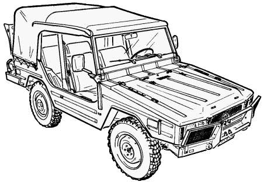
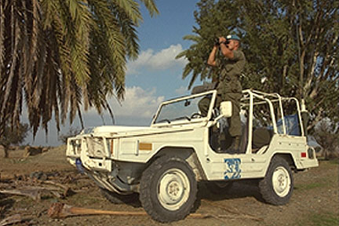
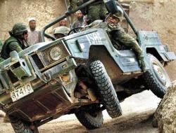
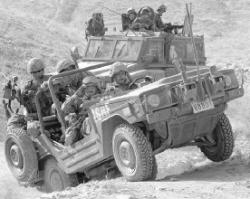
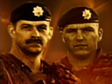
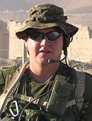

The Iltis is the Canadian replacement for the M151A2 built in Canada by Bombadier. Iltis is German for "ferret".




The Iltis became infamous in Afghanistan after the deaths of Canadian soldiers Sgt. Robert Alan Short, 42, and Cpl. Robbie Christopher Beerenfenger, 29. They died October 2, 2003 when their Iltis hit an anti-tank mine. The Iltis has no armour and very little was left of the vehicle except the spare tire, which was eerily unharmed.
On January 24, 2004 Cpl. Jamie Brendan Murphy, 26, was killed when a suicide bomber jumped on the hood of his Iltis. Three other soldiers where injured by the blast.The incident has brought into question whether an open jeep,
like the Iltis, is
an appropriate vehicle for use in Afghanistan.
The image of Sgt. Short and Cpl. Beerenfenger is from CTV News. The image of Cpl. Murphy is from CBC News.
With the arrival of the G Wagons, what is the fate of the 168 Iltis jeeps in Afghanistan? They are 19 years old and worth $3,000-$5,000 each. They would cost about $250,000 per flight to bring them back to Canada. They will be left behind.
An excellent source of information on Canadian Peacekeepers is available from the Peacekeeper's Home Page.
1976 The West German Armed Forces sends out proposals for a
4x4 vehicle that can carry a 500kg payload both on and off
road. Daimler-Benz and Volkswagen build prototypes.
1977 The Volkswagen Iltis is chosen for production. 8,800
vehicles are produced from 1977 to 1981.
1981 Bombadier purchases all the rights to the Iltis, along
with the tooling equipment, from Volkswagen.
1983 DND orders 1,900 Iltis from Bombadier.
1984 Belgium orders 2,500 Iltis.
1985 Vehicles delivered to DND.
The Iltis has a 1714cc four cylinder OHC engine which develops 75 bhp @ 5,000 rpm. It is the only current Canadian army vehicle to use regular gas rather than diesel.
The Iltis has a manual transmission with 5 speeds. However, only gears 1-4 are used for normal operation. There is a movable sleeve on the the gear shift to access the fifth gear which is, in reality, not a fifth gear but a super low first gear.
The Iltis also has selectable 4wd. There is a small lever on the floor between the driver's and passenger's seat located next to the passenger's seat that shifts between 4wd and 2wd. This switching is purely mechanical. When you put the Iltis into 2wd it goes into rear-wheel-drive. Engaging the 4wd lever will engage the front wheels.
Between the driver's and passenger's seat located next to the driver's seat is another small lever which switches the differential lock in and out. The diff lock is on the rear wheels. This switching is purely mechanical. Diff lock is normally left in the out position.
The super low first, which is labelled "G" on the shifter, is only available 4wd.
The Iltis has overhead semi-elliptical leaf springs with double acting shock absorbers.
It looks like it has four-wheel independent suspension, but with springs running the width of the body instead of the normal coils. The Iltis also has the axle tucked up into the body with smaller axles going up to it just like the M998. This gives it much better ground clearance (an extra 2" over the M38A1).
Now as to the Iltis. I don't think much of it. It is a very complex vehicle mechanically compared to a M38A1. Especially the drive train with the suspension and axles. The M38A1 had a much better system. Granted the A1 rides a lot rougher but it isn't a Range Rover. The Iltis is a constant 4x4 and disengaging the 4 wheel drive, while it could be done, is not recommended by DND or the driver's handbook. This is how I was taught on my conversion course anyway. Lifting the collar on the shift lever isn't so you can shift to low range, it's so you can engage the reverse gear.
Clive Reddin
Some "facts" from looking at an Iltis:
The historical information on this page comes from Jane's Military Vehicles and Ground Support Equipment 1985 (6th edition).
The information on the drive train is from email with CJ Benson.
Corrections by Sean Steele.
Comment by Clive Reddin
Original top image from ILTIS.CA.
Back to m38a1.ca